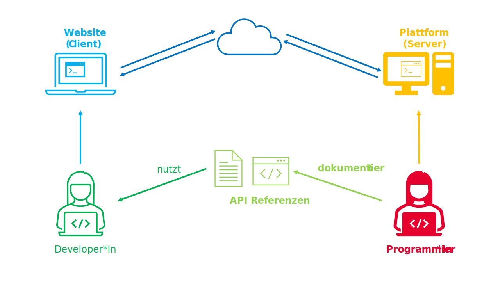
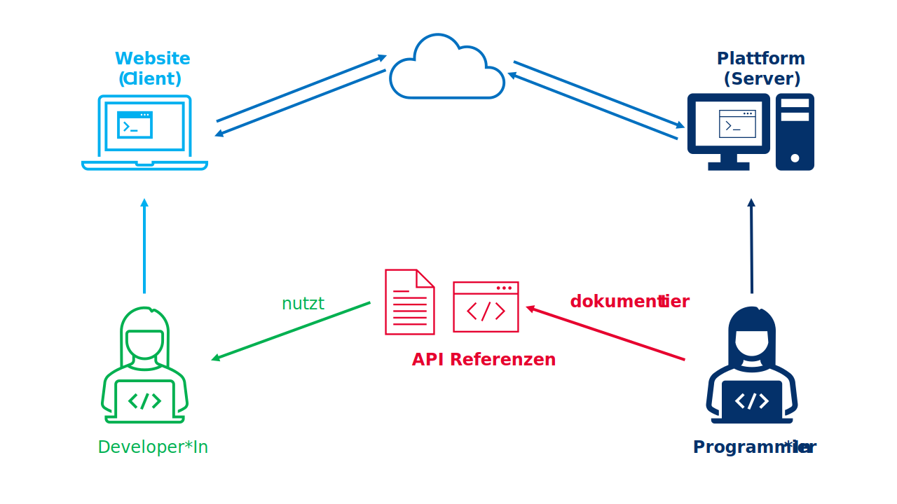
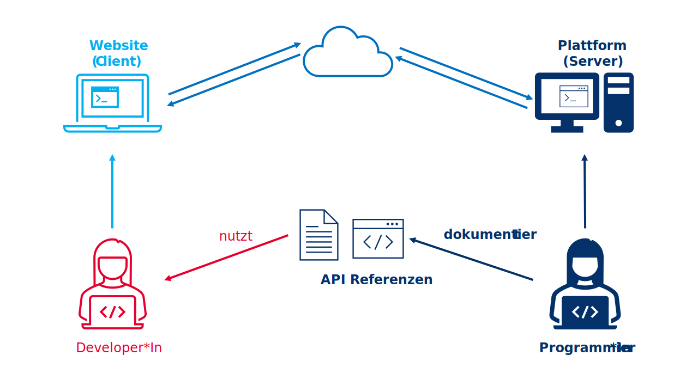
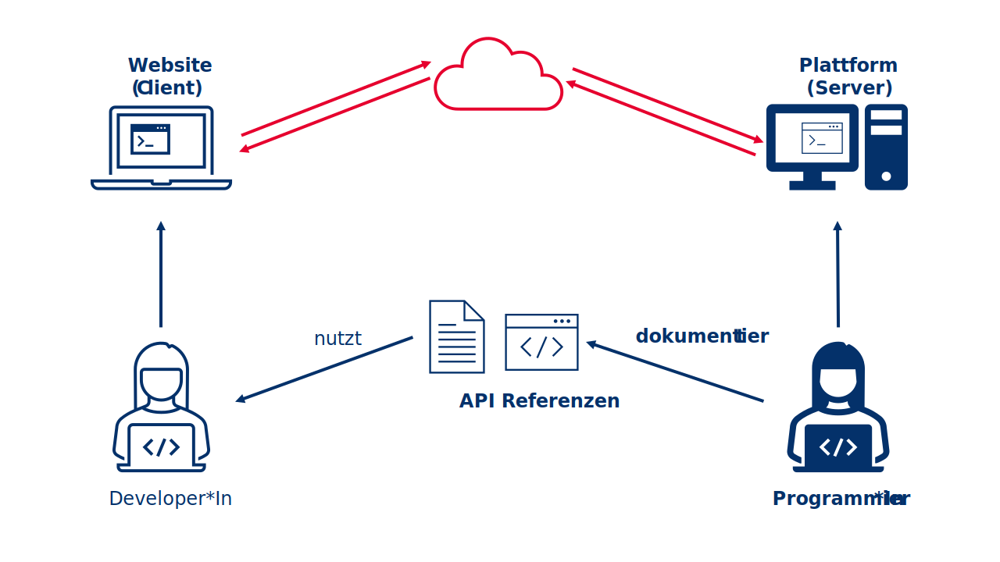

Datenerhebung im Fokus
Digital behavioral data - Session 03
09.11.2022
Die Power von Social Sensing
Forschungsdesign zur Erhebung digitaler Verhaltensdaten (Flöck & Sen, 2022)


Mit Fokus auf die Platform
Forschungsdesign zur Erhebung digitaler Verhaltensdaten (Flöck & Sen, 2022)


Kurze Einführung
(Web) Application Programming Interface (API)






Know your bias!
Ein Framework zur Minimierung von Bias (Olteanu et al., 2019)

Im Fokus: WikiWho & WhoColor API
Auswertung von Änderungen und Interaktionen auf überarbeiteten Schreibplattformen.
Kernfunktionalität von WikiWho
Bei einem revidierten Textdokument werden aller historischen Revisionen (Versionen) analysiert, um herauszufinden, wer welchen genauen Text auf Token-Ebene in welcher Revision geschrieben und/oder entfernt und/oder wieder eingefügt hat
Für jedes Token (~Wort) ist seine individuelle Hinzufügungs-/Entfernungs-/Wiedereinfügungsgeschichte verfügbar.
… in Kombination mit WhoColor API
Beim Öffnen eines Wikipedia-Artikels wird eine farbliche Markierung des Textes erstellt, die die ursprünglichen Autor:Innen des Inhalts, eine Autor:Innenliste, geordnet nach dem prozentualen Anteil an der Erstellung des Artikels, und zusätzliche Herkunftsinformationen anzeigt.
Es kann auch Konflikte in Bezug auf bestimmte Textteile und die Historie des Hinzufügens/Löschens eines bestimmten Wortes anzeigen.
Beispiel:

And now … you!
Anwendung von WhoColor API
Erster Schritt:
für Google Chrome: Laden und installieren Sie die Tampermonkey-Erweiterung.
für Mozilla Firefox: Laden und installieren Sie die Greasemonkey-Erweiterung.
Zweiter Schritt:
Sobald Sie eine der *Monkey-Erweiterungen erfolgreich installiert haben, gehen Sie zu whocolor.user.js.
Ihre *monkey-Browsererweiterung sollte Ihnen dann automatisch eine Installationsaufforderung anzeigen, die Sie bestätigen müssen.
Dritter Schritt:
Öffnen Sie entweder den Wikipedia-Artikel von Donald Trump oder Elon Musk und wenden Sie das “WhoColor”-Plugin an.

Vierter Schritt: Explore!
Was fällt Ihnen auf …
bezüglich der Editors List?
mit Blick auf besonders “konfliktreiche” Stellen?
mit Blick auf aktuelle Veränderungen?
…